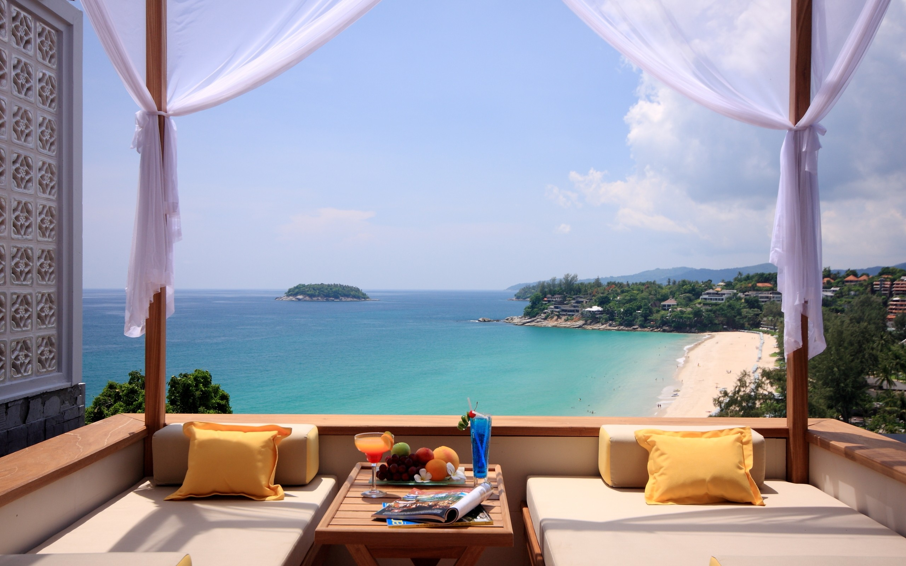

Accommodations

Twenty-one luxe suites commanding mesmerising views of the Southern Ocean cantilever along the coast, creating the ultimate fusion between a breathtaking wilderness setting and unbridled creature comforts.Interiors feature lavish king beds, sunken lounge, dramatic glass walled bathroom featuring Southern Spa amenities and outdoor terrace with occasional seating and daybed. Other features include; walk-in robe, complimentary room bar, twice daily housekeeping, optional climate control, heated floors, internet, music system (with MP3 input), safe and telephone. Televisions are in selected suites only. Signature design elements such as sandblasted limestone floors and recycled spotted gum feature walls, as well as contemporary bespoke furnishings and artworks commissioned from local Kangaroo Island artisans harness the natural theatre of this dramatic landscape and environs.